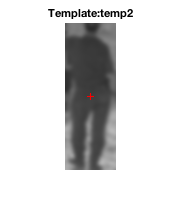
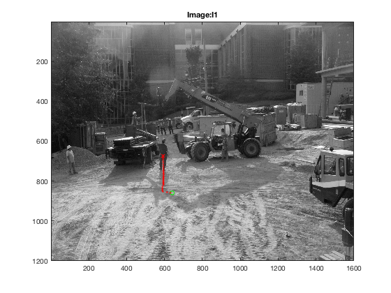

I = I1;
t = temp2;
pos = [640,860];
tI = imgaussfilt(t,2);
fI = imgaussfilt(I,5);
tnsq = sqrt(sumsqr(tI));
nsteps = 50;
I_name = 'I1';
t_name = 'temp2';
fprintf('Image: %s\n',I_name);
fprintf('Template: %s\n',t_name);
fprintf('Parameters:\n');
fprintf('(nsteps=%d,pos=[%d,%d])\n',nsteps,pos(1),pos(2));
figure(3);
imshow(tI);
title(sprintf('Template:%s', t_name));
hold on;
plot( size(tI,2)/2, size(tI,1)/2, 'r+');
hold off;
figure(2);
imagesc(I);
colormap('Gray');
title(sprintf('Image:%s',I_name));
hold on;
plot(pos(1), pos(2), 'go');
for ii=1:nsteps
dpos = gradTempMatchQA(double(tI), double(fI), pos);
pos = pos + dpos';
plot(pos(1), pos(2), 'r.');
drawnow;
end
plot(pos(1), pos(2), 'rx');
fprintf('Final Point:[%f,%f]\n',pos(1),pos(2));
Image: I1
Template: temp2
Parameters:
(nsteps=50,pos=[640,860])
Final Point:[592.967259,673.053170]
 